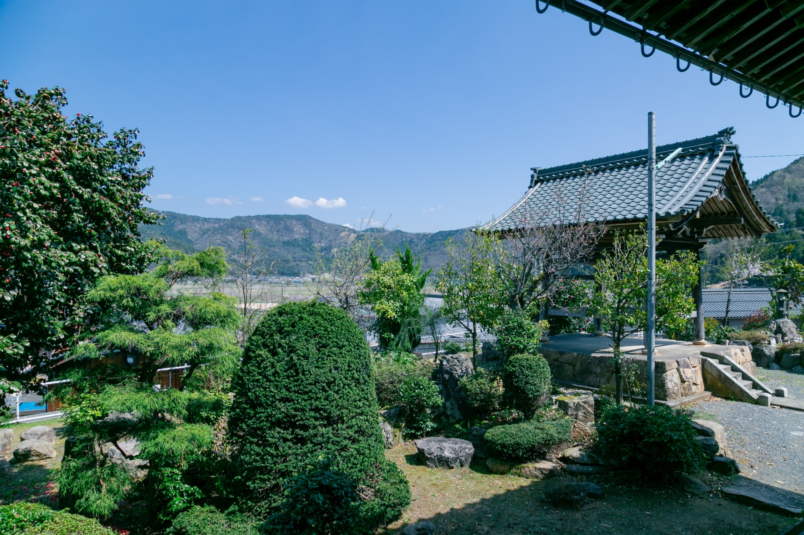

心に響く
阿弥陀仏の教え

ビワイチのお供に蓮通寺

琵琶湖一周サイクリング「ビワイチ」の道中、蓮通寺はルートからすぐの場所にございます。
当寺は、豊かな自然と静寂に包まれた場所です。
サイクリングの休憩に、心安らぐひとときをお過ごしになりませんか？
国道303号のビワイチルートから、１本入ったところにあります。
お問い合わせ
ご葬儀、ご法要、その他ご不明な点がございましたら、お気軽にお問い合わせください。